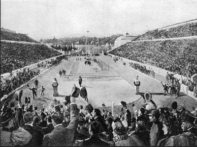
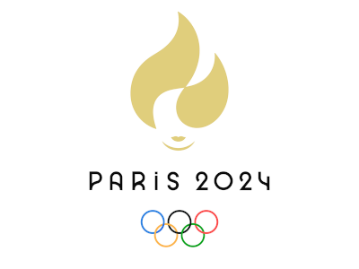

Las primeras Olimpiadas modernas tuvieron lugar en Atenas en 1896
Tienen lugar cada 48 meses en un país de uno de los Continentes
Las próximas Olimpiadas se van a celebrar en París, del 26 de julio al 11 de agosto de 2024.
Enlace a la página oficial (haz clic en la imagen):
